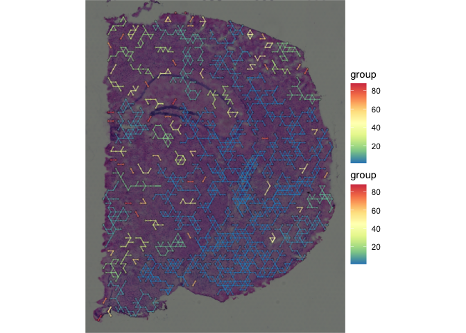
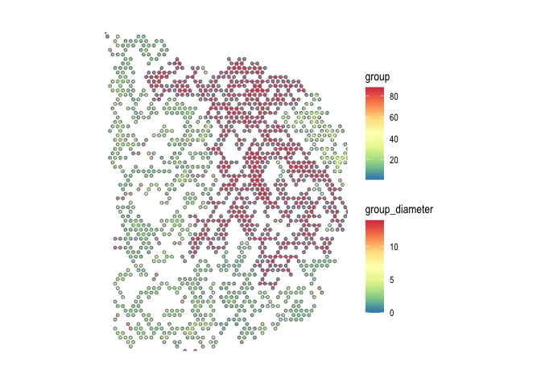
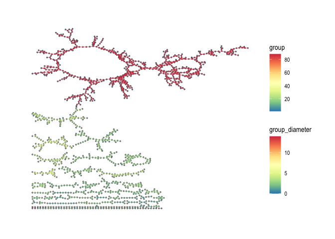

The goal of spatialCCC package is to investigate cell-cell signaling, by analyzing ligand-receptor interactions in spatial transcriptomic data.
Installation
You can install the development version of spatialCCC from GitHub with:
# install.packages("devtools")
devtools::install_github("dolchan/spatialCCC")Example
This is a basic example which shows you a basic workflow of the package:
- First, load required R packages.
# Looks like ggraph might have some issue importing 'guide_edge_colourbar'
# library(ggraph)
library(spatialCCC)- Then, load built-in LR database.
LRdb_m <-
get_LRdb_small("mouse")- Load an example Visium spatial transcriptomic data
data_dir <- file.path("example", "visium_tutorial")
spe_brain <-
SpatialExperiment::read10xVisium(samples = data_dir,
type = "HDF5",
data = "filtered")
# Log-Normalize
spe_brain <- scater::logNormCounts(spe_brain)Cell-cell communication analysis
- Compute Cell-Cell Communications over ligand-receptor pairs
ccc_tbl <-
compute_spatial_ccc(spe = spe_brain,
assay_name = "logcounts",
LRdb = LRdb_m)- Convert CCC table to CCC graph The conversion also adds various graph metrics to each CCC graph.
sp_col_data <- get_spatial_data(spe_brain)
ccc_graph_list <-
to_spatial_ccc_graph_list(ccc_tbl, sp_col_data, workers = 6)Cell-cell commuication visualization
- Spatial CCC graph plot with tissue image
LR_of_interest <- "App_Dcc"
plot_spatial_ccc_graph(
ccc_graph = ccc_graph_list[[LR_of_interest]],
tissue_img = SpatialExperiment::imgRaster(spe_brain),
node_color = "group",
node_size = 1,
node_alpha = 0.5,
edge_color = "group",
# clip = TRUE,
which_on_top = "edge"
)
- Spatial CCC graph plot without tissue image
In this case, graph layout can be “spatial” which keeps the original spatial locations, or other graph layout algorithm supported by igraph package.
plot_spatial_ccc_graph(
ccc_graph = ccc_graph_list[[LR_of_interest]],
graph_layout = "spatial",
node_color = "group",
node_size = 1,
edge_color = "group_diameter",
clip = TRUE,
which_on_top = "edge"
)
- Spatial CCC graph plot with “auto”, a.k.a., “kk” spring layout
In this format and the one below, one can see the distribution of cell-cell communication clusters
plot_spatial_ccc_graph(
ccc_graph = ccc_graph_list[[LR_of_interest]],
node_color = "group",
node_size = 0.1,
edge_color = "group_diameter",
edge_width = 0.1,
which_on_top = "edge"
)
- Spatial CCC graph plot with “stress” layout
plot_spatial_ccc_graph(
ccc_graph = ccc_graph_list[[LR_of_interest]],
# tissue_img = SpatialExperiment::imgRaster(spe_brain),
graph_layout = "stress",
node_color = "group",
edge_color = "group_diameter",
edge_width = 0.25,
which_on_top = "edge"
)